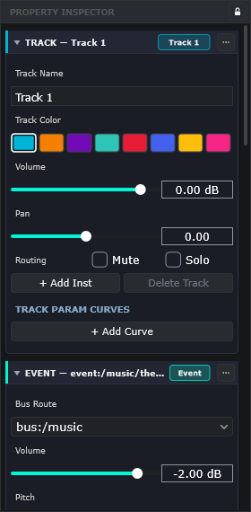
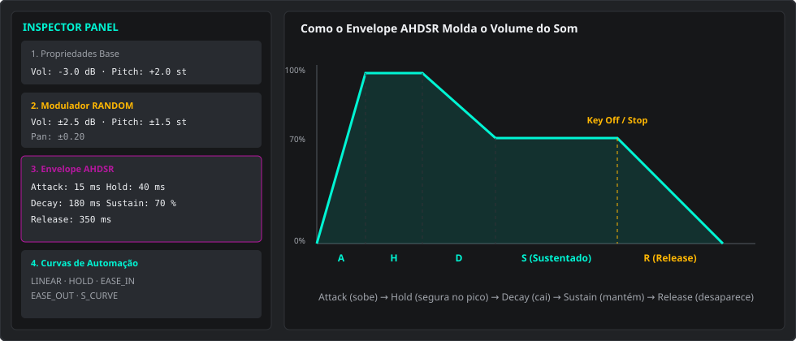

Capítulo 6 — Inspetor em Cards e Modulação
O painel direito (InspectorPanel) exibe todas as propriedades tipadas do item selecionado organizadas em Cards Visuais modernos, com sliders de controle 1:1, ajuste fino por Shift, reset por duplo-clique, envelopes AHDSR e Curvas de Automação.
Para entender como parâmetros locais e globais operam na CPU e conduzem envelopes e curvas de automação, consulte o capítulo conceitual de Fundamentos: Eventos e Parâmetros.
1. O Novo Layout em Cards do Inspector

Organização Modular em Cards (ValueBox)
O cabeçalho único PROPERTY INSPECTOR (24 px) integra o botão de cadeado (Lock Inspector) à direita. Cada card (Clip, Track, MÁSCARA & TRANSIÇÃO contextual no modo Layers ou quando há máscara ativa, e Event) usa cabeçalhos de 28 px com menu ... (Reset / Copy / Paste) e caixas numéricas ValueBox.
O Inspetor agrupa controles relacionados em cartões visuais limpos com cantos arredondados e tipografia hierárquica clara:
-
1
Card de Propriedades Base: Identificação do item, modo 2D/3D, seletor de saída Bus Route (ex:
bus:/sfx), fader de Volume nominal em dB, Pitch em semitons e Pan estéreo. -
2
Card de Polifonia & Vozes: Limite de instâncias (
Max Inst), política de roubo (Steal Mode: Oldest, Quietest, Fail), janela deCooldownem ms e tempo deStop Fade. -
3
Cards de Faixa e Clipe: ganho de pista, swatches de cor, tipo de instrumento, sample ou alvo associado e propriedades do clipe selecionado.
1.0 Ordenação Contextual e Princípio do Pai Imediato
O InspectorPanel adapta a pilha de cards ao nível exato da seleção atual, colocando sempre o alvo selecionado no topo e mantendo os ancestrais recolhidos logo abaixo para consulta rápida sem excesso de rolagem:
- Evento selecionado: Exibe exclusivamente o card Event (
EventHeaderCard) expandido no topo, sem exibir cards de faixa ou clipe. - Faixa selecionada: Exibe o card Track (
TrackCard) expandido no topo, com o card Event recolhido abaixo. - Clipe selecionado: Exibe o card Clip (
ClipCard) expandido no topo, seguido pelos cards Track e Event recolhidos abaixo.
As ações de adição seguem o princípio do pai imediato: o card Event fornece + Add Track e + Add Local Param; o card Track fornece exclusivamente + Add Inst para inserir instrumentos naquela faixa; e os controles de playlist/sons ficam no card do clipe ou no deck de playlist associado.
1.1 Barra de Ferramentas Superior e Bloqueio de Inspeção (Lock Inspector)
O topo do InspectorPanel possui uma barra de ferramentas fixa com o botão de Lock Inspector (ícone vetorial de cadeado):
- Congelamento de Seleção: Ao ativar o cadeado, o item atualmente inspecionado é congelado. Você pode clicar na Timeline, reposicionar a régua de reprodução ou selecionar outros eventos no navegador sem que o painel mude de contexto.
- Edição Plena Durante o Lock: Todos os sliders, knobs, campos numéricos e curvas continuam 100% interativos no item congelado, permitindo afinar o som enquanto você ouve ou navega em outras partes da sessão.
- Ressincronização Automática: Ao desativar o cadeado, o Inspetor atualiza imediatamente seus cartões para exibir o elemento que estiver atualmente selecionado na interface.
1.2 Cabeçalhos Padronizados e Menu de Ações de Cartão (...)
Cada cartão do Inspetor utiliza um cabeçalho unificado (InspectorCardHeader) equipado com recursos rápidos de autoria:
-
Chevron Colapsável: Clique no ícone de seta (
▼/►) para expandir ou recolher o corpo do cartão, mantendo seu espaço de trabalho enxuto e preservando a posição de rolagem. -
Badge Semântica: Identifica de relance o tipo do componente inspecionado (ex.:
EVENT,TRACK,CLIP — SINGLE,BUS,VCA). -
Menu de Ações (
...): O botão com três pontos no canto direito do cabeçalho abre um menu contextual com três operações essenciais:- Reset to Default: Restaura todos os controles do cartão para os valores padrão de fábrica em uma única transação atômica no histórico de Desfazer (Ctrl+Z).
- Copy Values: Copia todas as propriedades configuradas no cartão para uma área de transferência dedicada em memória (
InspectorClipboard), sem afetar o clipboard do sistema operacional. - Paste Values: Cola as propriedades salvas no cartão correspondente em uma operação atômica de Undo. A opção permanece desabilitada quando o tipo de dados no clipboard for incompatível com o cartão aberto.
2. Cards Específicos por Tipo de Instrumento
Ao selecionar um clipe na timeline, o Inspector adapta dinamicamente seus cards para expor os parâmetros especializados de cada tipo de instrumento:
| Instrumento | Controles Disponíveis no Card | Finalidade e Comportamento |
|---|---|---|
| Command Instrument | Command Type, Command Target |
Selecione o tipo de ordem (start_event, stop_event, snapshot_on, snapshot_off) e o alvo específico na lista suspensa do projeto. |
| Multi Instrument | Playlist Mode (Random, Shuffle, Sequential), Selection Scope; entradas e pesos na aba Playlist / Weights |
Sorteia ou itera entradas da playlist a cada disparo. Suporta amostras e eventos aninhados, com alvos cíclicos indisponíveis para evitar recursão infinita. |
| Scatterer Spawner | Int Min, Int Max, Polyphony, Total, Dist Min, Dist Max; entradas de áudio na aba Playlist / Weights |
Define a faixa aleatória entre spawns (ms), o limite de vozes simultâneas (polifonia), o total de disparos (0 = contínuo) e a dispersão espacial. A playlist de grãos é preenchida no Deck inferior, rejeitando alvos cíclicos. |
| Programmer Instrument | Key, Table Sample |
Mapeia a chave de áudio para um sample do projeto cadastrado na tabela de áudio (audio_table). A prévia local do Studio resolve a chave diretamente pela tabela e reproduz o sample; a rota dinâmica alternativa usa callbacks nativos. |
| Opção Async | Caixa Async no card do clipe |
Deixa a voz disparada avançar independentemente do cursor. Disponível em Single, Multi, Scatterer, Programmer e Event. O exemplo combina a opção com loop, Sustain Point e Key Off. |
Configuração de Multi e Scatterer no Inspector
Ao trabalhar com instrumentos estocásticos (Multi e Scatterer), a autoria divide-se entre dois painéis integrados:
-
Card do Inspector: Gerencia as regras de disparo. No Multi Instrument, define o modo de seleção (
Random (Weighted),ShuffleouSequential) e o escopo (Globalcompartilhado ouInstanceisolado). No Scatterer, define a cadência com Int Min e Int Max (janela temporal de spawn em milissegundos), o limite de Polyphony (teto de grãos simultâneos ativos para evitar sobrecarga de vozes) e o Total de disparos desejados (ou0para contínuo). -
Aba Playlist / Weights (Bottom Deck): Exibe a lista de fontes sonoras que alimentam o instrumento. Cada entrada pode ser uma amostra (WAV cadastrado em
assets/) ou um evento aninhado do projeto. O seletor de eventos filtra automaticamente o evento pai e qualquer descendente que gere ciclos na árvore hierárquica, marcando alvos cíclicos como indisponíveis.
Vincular um instrumento a um parâmetro
Selecione um instrumento na Timeline e use o card do clipe no Inspector. O campo Trigger Sheet lista parâmetros locais do evento e parâmetros globais do projeto. Depois de escolher um deles, ajuste Sheet Min e Sheet Max dentro do domínio exibido para o parâmetro; os limites são inclusivos. O instrumento é elegível quando o valor está na faixa e deixa de ser elegível quando sai dela.
O projeto distribuído declara o parâmetro global contínuo MasterVolume (mínimo 0, máximo 1, padrão 0.8). Para experimentar um parâmetro local, crie-o no evento antes de selecioná-lo em Trigger Sheet. Ganho de faixa/evento e fades são controles separados e podem suavizar a soma dos instrumentos sobrepostos; eles não alteram o intervalo do trigger.
Veja os passos com event:/music/theme e theme.wav no procedimento de Parameter Sheet.
3. Sliders 1:1 e Gestual de Alta Precisão
Todos os sliders e knobs do OpenAudio Studio respondem a três gestos fundamentais projetados para máxima velocidade e exatidão durante a mixagem:
| Gesto do Usuário | Comportamento Técnico | Aplicação Recomendada |
|---|---|---|
| Arraste Normal (1:1) | O valor segue a velocidade natural do cursor do mouse. | Ajustes rápidos de volume geral, pan e busca de valores aproximados. |
| Segurar Shift + Arraste | Reduz a sensibilidade em 10 vezes para Ajuste Fino. | Calibrar pequenos deltas de 0.1 dB, afinações sutis de 0.1 st ou tempos de milissegundo. |
| Duplo-Clique no Controle | Restaura instantaneamente o controle para o Valor Padrão (Default). | Retornar faders para 0.0 dB, pan para o centro (0.0) ou pitch para 0 st sem precisar digitar. Registrado no histórico de Undo. |
4. Envelope AHDSR (As 5 Fases Temporais do Som)

- Attack (ms): Tempo que o som leva para subir do silêncio (0%) até o pico máximo (100%).
- Hold (ms): Duração em que o som permanece travado no nível de pico antes de decair.
- Decay (ms): Tempo necessário para cair do pico até o patamar de sustentação.
- Sustain (%): Nível percentual de volume em que o som permanece enquanto a tecla/instância estiver ativa.
- Release (ms): Tempo de atenuação suave após o comando de parada (
KeyOff/Stop).
0 ms · Release 30 ms
O som atinge a potência imediatamente e corta rápido ao soltar (ideal para tiros, cliques e golpes metálicos).
400 ms · Release 1200 ms
O som surge gradualmente como uma névoa e dissolve lentamente ao terminar (ideal para pads, ventos e coros).
5. Curvas por Parâmetro no Inspetor
Com a pista selecionada no Inspector, em TRACK PARAM CURVES clique em + Add Curve e escolha [G] MasterVolume → volume. Também é possível escolher pitch ou pan como propriedade de destino. O eixo horizontal representa o valor do parâmetro e o vertical representa o ajuste aplicado à propriedade de destino; assim, a curva mapeia valores do parâmetro global para o volume da pista.
A automação da Timeline é outro controle: Volume Automation edita o ganho da pista em pontos de tempo (ms) e volume (dB). As duas formas podem coexistir; consulte Automação de volume no tempo na Timeline para inserir e arrastar esses pontos.
| Tipo de Curva | Comportamento Matemático | Melhor Uso em Jogos |
|---|---|---|
LINEAR |
Reta com taxa de variação constante entre os dois pontos. | Controles de volume proporcionais ou faders de VCA. |
HOLD |
Mantém o valor inicial fixo até cruzar o próximo ponto, onde salta abruptamente. | Trocas de estado de engrenagem (marcha de carro) ou tipos de superfície. |
EASE_IN |
Inicia com variação lenta e acelera exponencialmente ao final. | Sensação de acúmulo de energia (build-up ou aceleração de turbina). |
EASE_OUT |
Variação rápida no início que desacelera suavemente ao chegar ao destino. | Decaimento natural de ecos e desaceleração de veículos. |
S_CURVE |
Curva sigmoide em "S": suave na saída e suave na chegada. | Crossfades musicais orgânicos e transições de volume imperceptíveis. |
6. Modificadores de Parâmetros (PMOD)
Modificadores (PMOD) são comportamentos embutidos nos parâmetros que alteram como o valor do parâmetro é consumido pelas vozes de áudio em tempo real:
-
velocity: Define a velocidade de mudança do parâmetro por segundo. Comvelocity: 0, uma atualização não recebe essa rampa; um valor maior faz o valor caminhar até o novo alvo ao longo do tempo indicado pela taxa. -
hold_during_playback: Mantém, para a instância em reprodução, o valor do parâmetro que ela leu ao iniciar. Compare duas execuções de um sample curto em valores diferentes: com a opção desligada, mudanças podem afetar a instância ativa; ligada, a instância conserva a leitura inicial até terminar.
Os controles relacionados do parâmetro incluem Seek Up, Seek Down e Velocity; observe a mudança ao automatizar ou alterar o valor durante a audição. Para um instrumento em sustain, confira o passo a passo de Async, Sustain Point e Key Off.
7. Gestão de Polifonia e Cooldown
Para garantir que eventos frequentes não consumam ciclos desnecessários de CPU:
- Max Instances: Limita a quantidade de vozes simultâneas no jogo todo (ex.: 4 para passos, 6 para tiros).
- Cooldown (ms): Intervalo mínimo entre disparos (ex.: 50 ms impede que um clique duplo acidental dispare dois sons colados).
- Steal Mode: Escolha entre
Steal Oldest(rouba a voz mais antiga) ouSteal Quietest(rouba a mais inaudível).